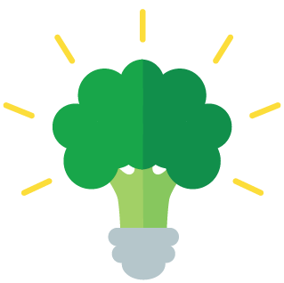

It was honestly surreal working at the Jet Propulsion Laboratory the Summer of 2016. I was free to explore the campus as I pleased, I learned more than I could have imagined, and made many friends I hope to keep in touch with for many years to come.
Projects

Food 4 Thought is an application a couple of friends of mine and I made during the school year. We made this app to help all UCSD students with the struggle that is finding an affordable and tasty place to eat on campus.